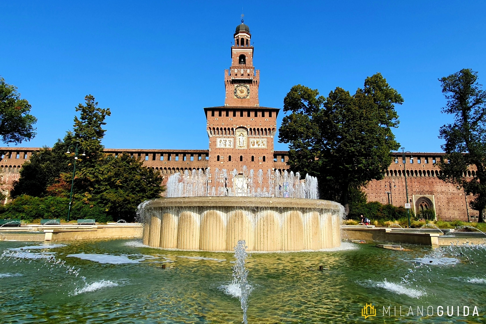

Castello Sforzesco
Un grande esempio è il Castello Sforzesco, costruito come edificio di difesa nel 1360 da Galeazzo II Visconti.

Un grande esempio è il Castello Sforzesco, costruito come edificio di difesa nel 1360 da Galeazzo II Visconti.
Un museo molto importante è il Civico Museo Archeologico, un ex convento che ospita testimonianze risalenti all'Altomedioevo fondato nel 1862.
La Basilica di sant'Ambrogio è tradizionalmente considerata per importanza la seconda chiesa della città di Milano. Fu costruita nel 386 per volere di Ambrogio, l’allora vescovo della città La basilica prende il suo aspetto definitivo tra il 1088 e il 1099 quando, sulla spinta del vescovo Anselmo, viene radicalmente ricostruita secondo gli schemi dell'architettura romanica.
La basilica di San Lorenzo Maggiore viene eretta tra la fine del IV e l'inizio del V secolo. Alla sua costruzione, era il più grande edificio a pianta centrale dell'Occidente. La dedica a San Lorenzo martire è attestata solo dal 590, quando Milano è già sotto dominio longobardo.
© Arcangelo Papa & Alessandro Ruta